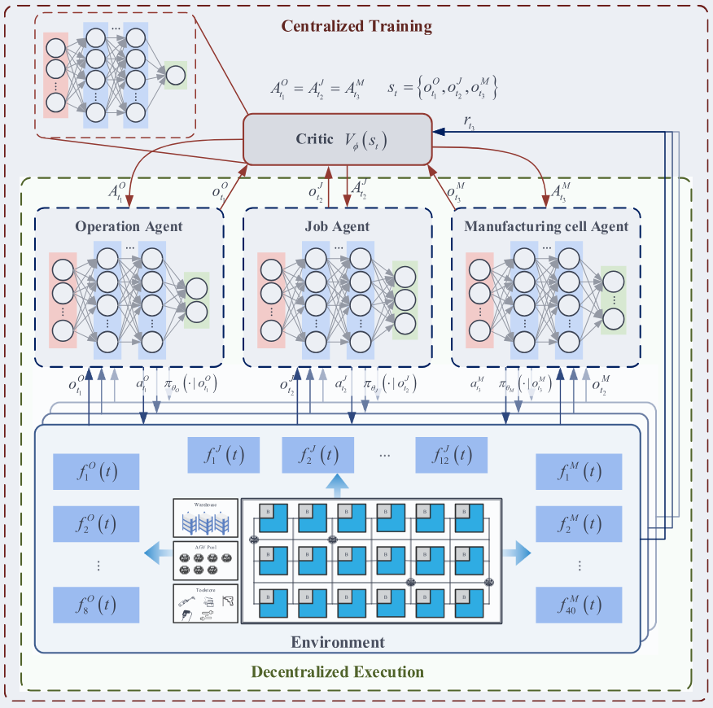
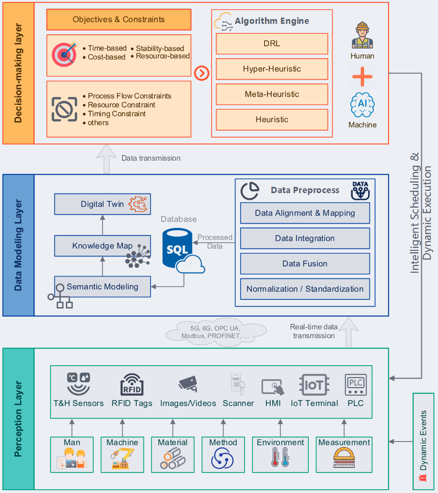
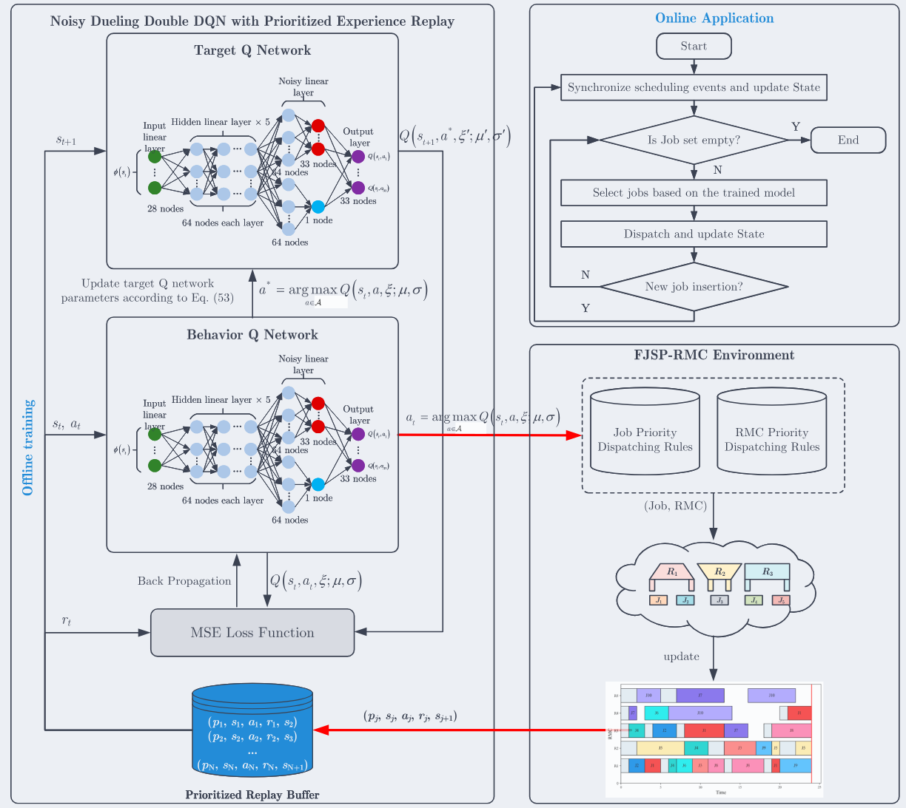
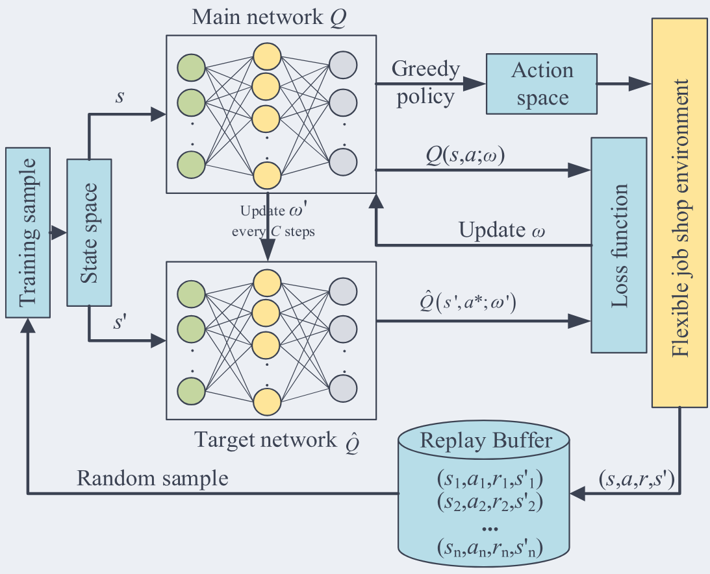

Welcome
I am a Ph.D. candidate in Mechanical Engineering at Beijing Institute of Technology, Beijing, supervised by Prof. Hao Gong and Research Fellow Cunbo Zhuang.
Before joining Beijing Institute of Technology, I received my M.S. and B.S. degrees in Mechanical Engineering from Hohai University, College of Mechanical and Electrical Engineering, Changzhou, China.
My research focuses on intelligent scheduling and management methods for reconfigurable manufacturing systems under dynamic and uncertain production environments. I am broadly interested in production scheduling, combinatorial optimisation, deep reinforcement learning, smart manufacturing systems, and large language models.
If you are interested in my work, please feel free to contact me by email.
News
- 2026.03: One paper on real-time dynamic integrated process planning and scheduling with reconfigurable manufacturing cells was accepted by Journal of Manufacturing Systems.
- 2026.03: One systematic review paper on dynamic shop floor scheduling in Industry 5.0 was accepted by Advanced Engineering Informatics.
- 2025.06: One paper on dynamic scheduling for flexible job-shop with reconfigurable manufacturing cells was accepted by International Journal of Production Research.
- 2024.09: Started Ph.D. study in Mechanical Engineering at Beijing Institute of Technology.
- 2024.06: Received M.S. degree in Mechanical Engineering from Hohai University.
Research Interests
- Dynamic Production Scheduling
- Combinatorial Optimisation
- Deep Reinforcement Learning
- Smart Manufacturing Systems
- Large Language Models
Publications

Liang Zheng, X. Chen, J. Liu, C. Zhuang
DOISCI Journal Paper
- Journal of Manufacturing Systems, 85, 127-154, 2026. JCR Q1, IF 14.2.

Towards greater resilience: A systematic review of dynamic shop floor scheduling in Industry 5.0
Liang Zheng, Y. Cai, Q. Gao, J. Liu, C. Zhuang
DOISCI Journal Paper
- Advanced Engineering Informatics, 71, 104241, 2026. JCR Q1, IF 9.9.

Liang Zheng, X. Chen, C. Zhuang, J. Liu, Y. Zhang, L. Lai
DOISCI Journal Paper
- International Journal of Production Research, 63(2), 7427-7459, 2025. JCR Q1, IF 7.3.

Research on flexible job shop scheduling problem with AGV using double DQN
M. Yuan, Liang Zheng, H. Huang, K. Zhou, F. Pei, W. Gu
DOISCI Journal Paper
- Journal of Intelligent Manufacturing, 36(1), 509-535, 2025. JCR Q1, IF 7.4.
- Y. Ming, Liang Zheng, J. Liu, C. Zhuang. Integrated process planning and scheduling with reconfigurable manufacturing cells through an improved dueling double deep Q-network algorithm. Engineering Applications of Artificial Intelligence, 172, 114370, 2026.
- M. Yuan, Q. Yu, Liang Zheng, S. Lu, F. Pei. Hierarchical collaborative scheduling of workers and AGVs for digital twin-based distributed flexible job shop. Computers & Industrial Engineering, 214, 111882, 2026.
- M. Yuan, S. Lu, Liang Zheng, Q. Yu, F. Pei, W. Gu. Distributed heterogeneous flexible job-shop scheduling problem considering automated guided vehicle transportation via improved deep Q network. Swarm and Evolutionary Computation, 94, 101902, 2025.
Education
- 2024.09 - 2028.06 expected, Ph.D. Candidate in Mechanical Engineering, Beijing Institute of Technology, Zhuhai, China
- Supervisors: Prof. Hao Gong and Research Fellow Cunbo Zhuang
- 2021.09 - 2024.06, M.S. in Mechanical Engineering, Hohai University, Changzhou, China
- Supervisor: Prof. Minghai Yuan
- 2017.09 - 2021.06, B.S. in Mechanical Engineering, Hohai University, Changzhou, China
Stay focused, keep learning, and build intelligent manufacturing systems with real-world impact.